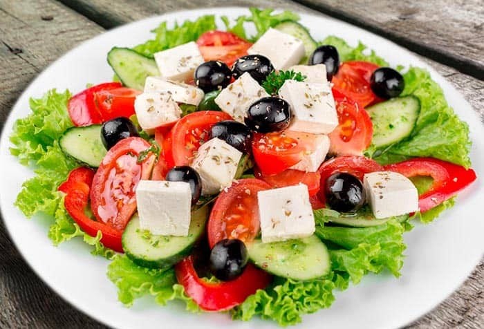
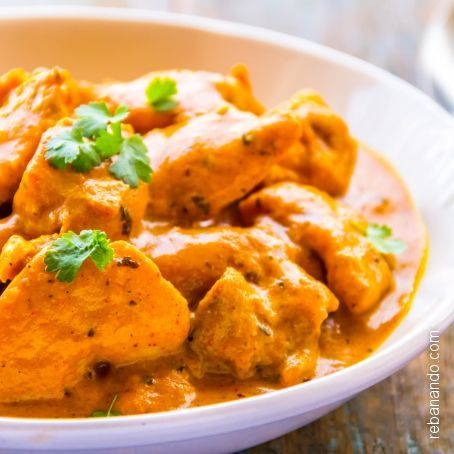
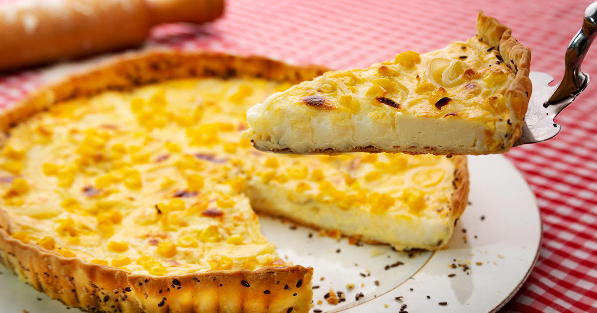

Ensalada griega
Una buena opcion si queres comeralgo fresco y sano.
Ingredientes
- tomate
- pepino
- cebolla
- aceitunas negras
- queso feta
- orégano
- aceite
- vinagre de vino tinto
- sal
- Miel
Preparación
- En un bol se van añadiendo los ingredientes de la ensalada: un tomate cortado en dados, medio pepino troceado dejando un poquito de piel, media cebolla pelada y picada en trozos, aceitunas negras (las que sobren se guardan con el líquido para que duren más), queso feta troceado y un poco de orégano.
- A parte, en un pequeño recipiente, preparamos una sencilla vinagreta para aliñar la ensalada en estas proporciones: una parte de vinagre de vino tinto, otras tres partes de aceite de oliva, un poquito de sal y un chorrito de miel para darle un punto dulce y contrarrestar la acidez del vinagre. Se mezcla la vinagreta y listo.
Pollo al curri
Ingredientes
- 6 cuartos traseros de pollo deshuesados y sin piel
- 2 cebollas
- 1 vaso de vino blanco seco
- 1 cucharada sopera de curry
- 1 taza de leche
- 1 taza de crema de leche
- 1 taza de caldo de verdura
- gotas de salsa Tabasco
- 4 papas
- sal
- pimienta negra
Preparación
- Cortar la carne de pollo en cubos grandes y dorar en una cacerola por todos sus lados.
- Agregar las cebollas cortadas en octavos y cocinar, durante 5 minutos, a fuego alto, separando las capas. Desglasar con el vino.
- Dejar evaporar el alcohol y cubrir con la crema, la leche y el caldo.
- Reducir a fuego bajo hasta que la salsa se espese y el pollo esté cocinado. Condimentar con curry, sal, pimienta y Tabasco.
- Pelar las papas, cortarlas en bastones finos y freírlas en abundante aceite hasta que estén doradas.
- Servir el curry con las papas paille.
Tarta de choclo
Ingredientes
- 1 tapa de pascualina
- 1 lata de choclos o choclos enteros desmenuzados
- 1 lata de choclo cremoso
- 30 gramos de manteca
- 2 puerros cortados
- 1 cebolla chica picadita
- 1 cucharada de harina 0000
- Media taza de queso rallado
- 2 huevos
- 1 pizquita de pimentón , Sal y pimienta, cantidad necesaria.
Preparación
- Cubrir la tartera con la masa de tarta.Para el relleno rehogar en un buen chorro de aceite de oliva la cebolla picada.Luego espolvorear la harina, remover enérgicamente hasta que se note cocida e incorporar la leche tibia sin dejar de remover hasta conseguir una salsa blanca.
- Agregar las dos latas de choclo, los condimentos, dejar cocinar todo por unos minutos y rellenar con esta preparación los moldes reservados.